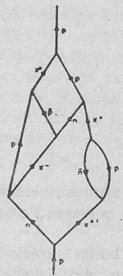

Yirminci yüzyılda atam-altı dünyasının araştırılması ile maddenin içsel dinamizmi ortaya çıkartılmış oldu. Böylece, atomları oluşturan parçacıklar olan atom-altı parçacıkların, yalıtılmış varlıklar olarak var olamadıkları, dinamik bir kalıbı teşkil ettikleri ve ayrıca ayrılamaz bütünsel bir etkileşimler ağının bölümleri oldukları ortaya çıktı. Söz konusu etkileşimler, kendilerini parçacık alış-verişi biçiminde belirginleştiren sonsuz bir enerji akışını kapsamaktadır. Bu ise, parçacıkların sonsuza dek yaratılıp, yok oldukları dinamik bir etkileşim ağıdır. Parçacıklar arasındaki etkileşim ise, maddesel dünyayı oluşturan sağlam yapıların meydana gelmesine imkân tanımıştır. Ancak bu yapılar da durağan değil, tam aksine, ritmik hareketler ile gidip-gelen bir hareket topluluğudur. Yani evrenin tümü, sonsuz bir hareket ve faaliyet göstermektedir. Evren, sürekli bir kozmik enerji dansını icra etmektedir.
Bu dans, olağanüstü bir kalıplar çeşitlemesini kapsamasına rağmen, belli başlı birkaç sınıfa da ayrılabilmektedir. Yani atom-altı parçacıklar ve onların etkileşimlerinin araştırılması, büyük bir düzeni gözler önüne sermiştir. Örneğin atomlar ve buna bağlı olarak da çevremizdeki bütün madde biçimleri, üç çeşit kütlesel parçacıktan oluşmaktadırlar: Protonlar, nötronlar ve elektronlardan. Dördüncü bir parçacık olan foton ise kütlesizdir ve elektromanyetik ışınımın ölçüm birimini oluşturmaktadır. Protonlar, elektronlar ve fotonlar sağlam ve istikrarlı parçacıklardır, yani bir çarpışma süreci içinde yok olmadıkları sürece, sonsuza dek var olabilmektedirler. Ama öte yandan nötronlar, kendiliğinden ayrışabilmektedirler. Bu ayrışım, «beta bozunumu» olarak isimlendirilmekte ve belirli bir radyoaktivite türünün temel sürecini teşkil etmektedir. Burada bir nötron, bir elektronun ve nötrino denilen yeni ve kütlesiz bir parçacığın eşliğinde, bir protona dönüşmektedir. Protonların ve elektronların olduğu gibi, nötrinolar da sağlam ve istikrarlı parçacıklardır. Nötrinolar, genelde bir Yunan harfi olan v (nü) ile gösterilmekte ve söz konusu «beta bozunumu» da simgesel olarak şu şekilde açıklanmaktadır :
Radyoaktif bir maddedeki atomlarda meydana gelen nötron-proton dönüşümü, bu atomların tamamı ile değişmesine neden olmaktadır. Bu süreç dahilinde oluşan ve açığa çıkan elektronlar, güçlü bir ışınım olarak yayınlanmakta, bundan da biyoloji, tıp ve sanayi dallarında yaygın biçimde istifade edilmektedir Öte yandan nötrinolar ise, çok zor bir biçimde gözlenebilmektedirler. Çünkü ne bir kütleye ve ne de bir elektriksel yüke sahip değildirler.
Daha önceden de belirttiğim gibi, her parçacığın aynı kütleye ve fakat ters yüke sahip bir karşıt-parçacığı bulunmaktadır Örneğin bir foton kendi karşıt-parçacığını oluşturmaktadır. Elektronun karşıt-parçacığı ise, pozitron olarak isimlendirilmektedir. Bunların haricinde bir karşıt-proton, bir karşıt-nötron ve bir karşıt-nötrino da vardır. Aslında beta bozunumu sırasında meydana gelen kütlesiz parçacık bir nötrino değil, bir karşıt-nötrino'dur. (v-) ile gösterilmektedir). Böylece söz konusu süreç şu şekilde düzeltilmelidir:
Buna rağmen şimdiye dek anlattığımız parçacıklar, günümüzde bilinen atom-altı parçacıklarının yalnızca küçük bir bölümünü oluşturmaktadırlar. Ancak söz konusu diğer parçacıklar istikrarlı olmadıklarından, çok kısa bir süre içinde başka parçacıklara dönüşerek, bozunmaktadırlar. Bu parçacıklardan bazıları da bir kez daha bozunarak, sağlam ve istikrarlı bir parçacık oluşana kadar bozunmaya devam etmektedirler. Bu tür sağlam ve istikrarlı olmayan parçacıkların araştırılması, çok pahalıdır. Çünkü onların her gözlem için çarpıştırılmak suretiyle yeniden yaratılmaları gerekmektedir. Bu ise ancak büyük parçacık hızlandırıcılarının, kabarcık odalarının ve çok kapsamlı diğer parçacık algılayıcılarının inşa edilmesi anlamına gelmektedir.
Sağlam ve istikrarlı olmayan parçacıkların bir çoğu, insanın sahip olduğu zaman ölçeği ile karşılaştırıldığında, inanılmayacak kadar kısa sürelerde, (örneğin bir saniyenin bir milyonda biri kadar) yok olmaktadır. Ama yine de onların ömür süreleri, büyüklükleri ile orantılanmalıdır (çünkü parçacıkların kendileri de çok küçüktür). Eğer böyle bakacak olursak, bunların bir çoğu esasen bir hayli uzun bir süre hayatta kalmaktadırlar. Çünkü milyonda bir saniyenin bile, parçacık dünyasında çok uzun bir süre olduğu bilinmektedir. Bir insan, kendi boyunun birkaç kat fazlasını ancak bir saniyede katedebilmektedir. Bir parçacık için bu değerlendirme yapıldığında normal bir parçacığın kendi boyunun birkaç kat fazlası bir mesafeyi ne kadar süre içinde katettiği araştırılacaktır.
(*) Yukarıdaki tabloda on üç tane değişik parçacık türü gösterilmiştir. Bunlardan birçoğu değişik «yüklü durumlarda» belirirler. Örneğin pionlar, pozitif bir yüke (π+) ya da negatif bir yüke (π-) veya elektriksel olarak nötr (π0)bir duruma sahip olabilirler. Ayrıca iki tip nötrinonun var olduğunu görmekteyiz. Bunlardan bir tanesi yalnızca elektronlarla, diğeri ise yalnızca müonlarla etkileşmektedirler. Tabloda karşıt-parçacıklar da belirtilmiştir. Bunlardan üç tanesi kendisinin karşıt-parçacığı durumundadır. (Foton, eta ve müonla eşleşmiş pion). Yukarıdaki parçacıklar, artan kütlelere göre sıralanmıştır: Fotonlar ve nötrinolar kütlesizdir, elektronlar ise en hafif kütleli parçacıklardır. Müonlar, pionlar ve kaonlar, elektronlardan birkaç yüz defa, diğer parçacıklar ise yine elektronlardan bin ilâ üç bin kez daha ağırdırlar.
Bu zaman dilimi ise, «parçacık saniyesi» olarak adlandırılabilir.(*)
Bir parçacık, orta büyüklükteki bir atom çekirdeğini aşabilmek için (eğer çarpışma deneylerinde olduğu gibi ışık hızına yakın bir hızla yol aldığını var sayarsak), «parçacık saniyesinin» on katı bir süreye gerek duyacaktır. Sağlam ve istikrarlı olmayan parçacıklar arasında iki düzine kadar parçacık vardır ki, bunlar bozunmadan önce birkaç atomdan rahatlıkla geçebilmektedirler. Bu, büyüklüklerinin yüz bin katı kadar bir uzunluğa denk düşmekte ve birkaç yüz «parçacık saatini» oluşturmaktadır. Söz konusu parçacıklar, deminki tabloda, daha önce belirttiğimiz sağlam ve istikrarlı parçacıklarla beraber gösterilmişlerdir. Ancak bu istikrarsız parçacıkların bir çoğu bozunmadan önce bir ya da birkaç santimetre yol katedebilmektedirler. Bunlar arasında en uzun ömre sahip olanlar ise (saniyenin milyonda biri kadar), hiç bozunmadan birkaç yüz metre yolu rahatlıkla aşabilmektedirler. Bu gerçekten de büyük bir mesafedir!
(*) Fizikçiler bu süreyi 10-23 saniye olarak hesap etmişlerdir. Bu ise yirmi üç tane sıfıra sahip ondalık bir sayıdır. Yani açacak olursak: 0,000000000000000000000001 saniye demektir.
Şu ana kadar bilinen parçacıkların tümü, «rezonanslar» olarak isimlendirilen ve az sonra daha detaylı olarak inceleme fırsatı bulacağımız bir kategoriye dahildirler. Bunlar, kısa bir süre yaşamakta, birkaç «parçacık saniyesi» içinde bozunmakta ve böylece büyüklüklerinin ancak birkaç katı bir yolu aşabilmektedirler. Yani bunlar kabarcık odasında gözlenemeyen parçacıklardır. Bunların var olduklarını ancak dolaylı yollardan tespit edebiliriz. Kabarcık odaları resimlerinde görülen izler ise, ancak deminki tabloda sıralanan parçacıklarla oluşturulabilmektedir.
Bu parçacıkların tümü de, çarpışma süreçleri esnasında oluşup, yok edilebilmektedirler. Ayrıca bunlardan her biri, sezilgen parçacık olarak değiştirilebilmekte ve diğer parçacıklar arasındaki etkileşimi sağlayabilmektedirler. Bu anlamda, çok sayıda parçacık etkileşiminden söz edilmesi gereği düşünülebilir. Fakat çok şükür, (henüz nedenini bilmesek bile), bu etkileşimlerin tümü, birbirinden çok farklı etkileşim şiddetlerine sahip yalnızca dört tane kategoriye ayrılabilmektedir:
1. Şiddetli etkileşimler
2. Elektromanyetik etkileşimler
3. Hafif etkileşimler
4. Yerçekimsel etkileşimler.
Bunlardan elektromanyetik ve yerçekimsel etkileşimler, bu kategorilerin en tanınmışlarıdır. Çünkü büyük ölçekli dünyamızda tecrübe edebildiğimiz etkileşimlerdir. Örneğin yerçekimsel etkileşimler, tüm parçacıklar arasında cereyan etmelerine rağmen, deneysel olarak tespit edilemeyecek kadar hafiftirler. Ama makroskopik dünyada, kütlesel cisimler çok sayıda parçacıklardan oluştuğundan, onların yerçekimsel etkileşimleri birleşerek, evrenimizin en baskın kuvveti olan yerçekimsel kuvveti meydana getirmektedirler. Elektromanyetik etkileşim ise, yüklü bütün parçacıklar arasında oluşmaktadır. Bunlar, kimyasal süreçler ile bütün atomsal ve moleküler yapıların oluşumuna sebep olmaktadırlar. Öte yandan şiddetli etkileşimler de protonları ve nötronları atam çekirdeğine bağlamaktadırlar. Şiddetli etkileşimler, doğa da görülen en şiddetli kuvvet olan çekirdeksel kuvveti meydana getirmektedirler. Örneğin elektronlar, atom çekirdeğine elektromanyetik kuvvet aracılığıyla yaklaşık on elektron volt denilen enerji birimi ile bağlanmışlardır. Öte yandan çekirdeksel kuvvetler ise protonları ve nötronları yaklaşık on milyon enerji birimi ile birbirlerine yapıştırmaktadırlar.
Ancak şiddetli etkileşimlerle birbirlerine bağlanmış olan parçacıklar yalnızca nükleonlar değildir. Aslında parçacıkların büyük bir çoğunluğu, şiddetli etkileşim göstermektedir. Bilinen parçacıklardan yalnızca beş tanesi (ve tabii bunların karşıt-parçacıkları) şiddetli bir etkileşim göstermezler. Bunlar, deminki tablonun üst kesimlinde görülen fotonlar ve dört tane de «leptonlar»dır. Yani bütün parçacıklar iki büyük guruba ayrılabilir: Bunlardan birincisi «leptonlar», diğeri ise «hadronlar» olarak isimlendirilen ve şiddetli etkileşim gösteren parçacıklar sınıfıdır. Hadronlar da, «mesonlar» ve «baryonlar» olarak ikiye ayrılmaktadırlar. Bunlardan baryonların hepsinde birer karşıt-parçacık bulunmakta, mesonların ise yalnızca bazılarında karşıt-parçacık görülmektedir.
Leptonlar, hafif etkileşim diye isimlendirdiğimiz dördüncü etkileşim türüyle ilgilidirler. Bu etkileşim o kadar hafif ve kısa menzillidir ki, bunlara dayanan hiç bir «nesne» birbirine tutturulamamaktadır. Ama öte yandan, diğer üç türdeki etkileşimin oluşumuna neden olurlar (yani: Atom çekirdeğini tutan şiddetli etkileşim, atomların ve moleküllerin yapısını ayakta tutan elektromanyetik etkileşim ve nihayet gezegenleri, yıldızları ve galaksileri bir arada tutan yerçekimsel etkileşim bu yolla ortaya çıkar). Hafif etkileşim ise, yalnızca belirli bir parçacık çarpışması ve bozunumu sırasında ortaya çıkmaktadır (örneğin, daha önce sözünü ettiğimiz beta bozumunda olduğu gibi).
Hadronlar arasında cereyan eden tüm etkileşimler, diğer hadronların değiş-tokuşu ile meydana gelmektedir Bu kütlesel parçacıkların değiş-tokuşu ise, çok kısa menzile sahip olan şiddetti etkileşimlere neden olmaktadır. Bu etkileşim yalnızca birkaç parçacık uzunluğuna kadar erişebilmekte ve bu nedenden dolayı da hiç bir zaman makroskopik bir kuvvet haline gelememektedir. Yani şiddetli etkileşimler, günlük hayatımızda tecrübe edilemezler. Öte yandan elektromanyetik etkileşimler, kütlesiz fotonların değiş-tokuşu aracılığı ile meydana geldiğinden, elektrik ve manyetik kuvvetlere, büyük ölçekli dünyamızda da rastlayabilmekteyiz. Yerçekimsel etkileşimlerin ise, «graviton» denilen kütlesiz bir parçacık tarafından meydana getirildiği düşünülmektedir. Ama bunlar o kadar belirsizdirler ki, var olmalarına engel olacak hiç bir şey bulunmamasına rağmen, varlıkları henüz deneylerle ispat edilememiştir.
Son tür olan hafif etkileşimler ise, olağanüstü kısa bir menzile sahiptirler. Bu menzil, şiddetli etkileşimlerde görülen menzilden de kısadır, işte bu kısa menzilden dolayı, söz konusu etkileşimlerin «W-meson» olarak isimlendirilen çok ağır bir parçacığın değiş-tokuşu ile meydana geldiği kabul edilmektedir. Söz konusu varsayımsal parçacığın (büyük kütlesi göz ardı edilirse) fotonların elektromanyetik etkileşimlerde oynadıkları role benzer bir role sahip olduğu sanılmaktadır. Bu benzerlik, alan kuramındaki en yeni gelişmelerin de temelini oluşturmaktadır. Bu yeni gelişmeler aracılığı ile birleşik bir elektromanyetik ve hafif etkileşimler kuramı geliştirilmeye çalışılmaktadır.
(*) Parçacık çarpışmasına ve bozunumuna karmaşık bir örnek: Sol taraftan gelen negatif bir pion (π-) kabarcık odasında hareketsiz «duran» bir protonla yani, bir hidrojen atomu çekirdeği ile çarpışmaktadır. Her iki parçacık da parçalanmaktadır ve bunun üzerine bir nötron (n) ve iki kaon (K- ve K+) oluşmaktadır. Nötron, hiç bir iz bırakmadan uçup gitmektedir. K- ise, odacıkta bulunan diğer bir protonla çarpışmaktadır. Her iki parçacık yine parçalanmakta, bir lambda (Λ) ve bir foton (γ) meydana gelmektedir. Bu iki nötr parçacıktan hiçbiri şekilde görülmemektedir. Ama (Λ, çok kısa bir süre sonra iz oluşturan bir proton (p) ve bir (π-)’a bozunmaktadır. (Λ)'nın oluşumu ve bozunumu arasındaki kısa mesafe, yukarıda çok net bir biçimde görülmektedir. Son olarak da ilk çarpışmada oluşmuş olan (K+), bir süre hareket ettikten sonra üç pion oluşturacak biçimde bozunmaktadır.
Yüksek enerji fiziği alanında gerçekleştirilen çarpışma deneylerinin birçoğunda, şiddetli, elektromanyetik ve hafif etkileşimler birleşerek karmaşık bir olaylar zinciri meydana getirmektedirler. Çarpışan ilk parçacıklar çoğu kez parçalanmakta ve bu şekilde yepyeni parçacıklar oluşturmaktadırlar. Bunlar da, ya çarpışmaya devam eder, ya da bozunur ve kalıcı bir parçacık meydana getirirler. Aşağıdaki şekilde, söz konusu oluşum ve yok oluş ile ilgili bir kabarcık odası çizimi görülmektedir.
(*) İki tane çift oluşumu kapsayan bir zaman kesiti: Aşağıdan gelen bir karşıt-proton (p-), kabarcık odasında bulunan bir protonla çarpışmakta ve bir (π-) (sola doğru uçuyor), bir (π+) (sağa doğru uçuyor) ve iki foton (γ) ortaya çıkmakta, bunlardan her biri de bir elektron-pozitron çifti oluşturmaktadır. Bu şekilde oluşan pozitron (e+) sağa, elektron (e-) ise sola doğru uçmaktadır.
Aslında bu resim, parçacık düzeyindeki maddenin değişkenliğini gösteren çarpıcı bir belgedir. Burada çeşitli kalıpların (ya da parçacıkların) bir enerji selinde nasıl da yaratılıp, yok oldukları rahatlıkla görülebilmektedir(*) .
Eğer kütlesiz, fakat çok yüksek enerjilere sahip bir foton da söz konusu ayrışım işlemlerine katılırsa, maddenin oluşumu daha da ilginç bir görünüm kazanır. Çünkü fotonlar kabarcık odasında gözlemlenemediklerinden, birdenbire yüklü bir parçacık çifti oluşmaktadır. Oluşan elektron ve pozitron ise, ayrı eğriler halinde uçup gitmektedirler. Aşağıda, iki tane çift oluşumuna çok güzel bir örnek verilmiştir.
Çarpışma süreçleri dahilinde ölçülen başlangıç enerjisi ne kadar büyükse, yaratılan parçacıkların sayısı da o kadar çok olacaktır. Sayfa 327'deki çizimde bir karşıt-proton ile bir proton arasında meydana gelen çarpışmadan sonra elde edilen sekiz adet pion görülmektedir.
Sözü edilen çarpışmaların tümü, yapay olarak gerçekleştirilmiştir. Bu amaçla, içinde parçacıkların gerekli hızlara ve enerjilere ivmelendiği büyük laboratuvar makineleri kullanılmaktadır. Dünyada yaşanan doğal fenomenlerin çoğunda ise, enerjiler, kütlesel parçacıkların yaratılmasına yetecek kadar büyük değildir. Fakat buna rağmen atom-altı parçacıkların, örneğin yıldız çekirdeklerinde üretildiklerini görmekteyiz.
(*) Bir karşıt-proton (p-) ile, kabarcık odasında bulunan bir proton arasında meydana gelen bir çarpışma sonucu oluşan sekiz adet pion.
(*) Yalnızca yüklü parçacıkların birer iz bıraktıklarına dikkat etmeliyiz. Bu izlerin ise manyetik alanların yarlığı nedeniyle saat yönünde bükülmüş olduklarını görürüz (pozitif yüklü parçacıklar). Negatif yüklü parçacıkların izleri ise saat yönüne ters biçimde bükülmüştür.
Buralarda, hızlandırıcı laboratuvarlarında incelediklerimize benzer olaylar sürekli bir biçimde meydana gelmektedirler. Bazı yıldızlarda ise, söz konusu süreçler, astronomların evren hakkındaki görüşlerine kaynaklık eden konulardan birini oluşturan, çok şiddetli elektromanyetik ışınımlara yol açmaktadırlar. Bunlar genellikle radyo dalgaları, ışık dalgaları ya da röntgen dalgaları biçiminde ortaya çıkmaktadırlar. Yıldızlar arası uzay ve galaksiler arası uzay, bundan dolayı söz konusu elektromanyetik ışınımın sayısız frekanslarıyla dolup, taşmaktadır. Yani bu bölge farklı enerjilere sahip fotonlarla doludur. Fakat bunlar, kozmosun içinde hareket eden tek parçacık biçimi değildir. Yani «kozmik ışınım» yalnızca falanlardan değil, aynı zamanda kaynağı tam bir muammayı oluşturan çeşitli ağır ve kütlesel parçacıklardan meydana gelmektedir. Bunlardan çoğu bazen çok büyük enerji değerlerine ulaşan protonlardan oluşmaktadırlar. Sözü edilen enerji değerleri, günümüzün en güçlü parçacık hızlandırıcılarında elde edilebilen enerjilerden bile daha fazladır.
Yüksek enerjilere sahip «kozmik ışınım» dünya atmosferine çarptığında, burada bulunan hava atomlarının çekirdekleri ile çok sayıda çarpışma meydana gelmektedir. Böylece çok çeşitli ikincil parçacıklar doğmaktadır. Bunlar, ya hemen bozunmakta ya da başka, çarpışmalardan geçerek yeni parçacıkların ortaya çıkmasına yol açmaktadırlar. Böylece, dünyaya bu tip parçacıklar ulaşabilmektedirler. Bu şekilde, dünya atmosferine dalan bir tek proton bile, içerdiği kinetik enerjisinin dönüşümü ile çok sayıda fenomenlerin meydana gelmesine sebep olmaktadır. Bu yeni parçacıklar, havada ilerleyip, çok sayıda çarpışmalara maruz kaldıkça yavaş yavaş emilmektedirler. Yani yüksek enerji fiziğinde gerçekleştirilen ve gözlemlenen çarpışma deneyleri, doğal olarak ve hatta daha yoğun bir biçimde, dünyanın atmosferinde kendiliğinden cereyan etmektedir. Bu da büyük bir parçacık kalıbı çeşitliliğine yol açmakta ve sürekli bir enerji akımını oluşturmaktadır. Sanki yaratılışın ve yok oluşun ritmik bir dansı gibidir.
Parçacıklar dünyasında cereyan eden oluşum ve yok oluş süreçleri, yalnızca kabarcık odalarında gözlenebilen cinsten değildirler. Bunlar ayrıca sezilgen parçacıkların yaratılışlarını ve yok oluşlarını da kaplamaktadırlar. Parçacık etkileşimleri sırasında değiş-tokuş edilen bu parçacıklar ise, ne yazık ki, gözlemlenmeye yeterli bir ömre sahip bulunmazlar. Örneğin bir proton ile bir karşıt-protonun çarpışmasıyla oluşturulan iki pionu ele alalım. Bu olayın uzay-zaman diyagramı, aşağıdaki gibidir (bu diyagramlarda zamanın, aşağıdan yukarıya- doğru ilerlediğini unutmayalım). Burada, uzayın ve zamanın herhangi bir noktasında çarpışan bir proton (p) ile bir karşıt-protonun (p-) dünya çizgileri gösterilmiştir. Söz konusu parçacıklar çarpıştıktan sonra, parçalanmakta ve iki tane pionun (π+ ve π-) oluşumuna sebep olmaktadırlar. Ancak bu diyagram tam bir resim değildir.
Çünkü bir proton ile bir karşıt-proton arasındaki etkileşim aynı zamanda sezilgen bir nötron alış-verişi olarak da düşünülebilmektedir (bu alternatif açıklanış tarzı diyagramda gösterilmiştir).
Aşağıdaki çizimde gösterilen süreç de buna benzer olarak üç sezilgen parçacığın (yani, iki nötron ile bir protonum) yaratılışını ve yok edilişini kapsamaktadır. Bu karmaşık fenomen, bir değiş-tokuş süreci
olarak ifade edilebilir (proton/karşıt-proton çarpışması sonucu dört tane pion oluşmuştur). Yani bu türlü açıklandığında, Feynman diyagramı şu şekli alacaktır(*).
Söz konusu örnekler, kabarcık odası fotoğraflarında görülen çizgilerin, parçacıklar arasındaki etkileşimi nasıl kaba bir biçimde yansıttıklarını göstermektedirler. Çünkü gerçek süreçler, aslında daima çok daha karmaşık bir parçacık değiş-tokuş ağını meydana getirirler. Eğer etkileşime dahil olan parçacıkların sürekli olarak kendiliklerinden, sezilgen parçacıklar yaratıp-yok ettiklerini de düşünürsek, durum daha da karmaşıklaşacaktır. Örneğin bir proton sürekli olarak nötr bir pion yaratıp, emecektir.
(*) Aşağıdaki diyagramların tümü şematiktir ve parçacık çizgilerinin açılarına dikkat edilmemiştir. Ayrıca kabarcık odasında bulunan başlangıç protonu fotoğraflarda görülemediğinden, (buna karşın yine de zaman içinde hareket ettiklerinden) uzay-zaman diyagramlarında ayrı bir dünya çizgisi ile gösterilmiş olduklarına dikkat ediniz.
Bazı hallerde de bir π+ yayınlayıp bir nötron haline dönüşecek, bu nötron ise, kısa bir süre sonra bir -π+'yı emerek yeniden bir protona dönüşecektir. Feynman diyagramlarında görülen proton çizgilerinin ise, söz konusu diyagramlarda şu yeni biçimlerle değiştirilmesi gerekecektir. Sezilgen süreçlerde, başlangıçtaki parçacık, kısa bir süre için tamamen yok olabilecektir (diyagramda (b)'de gösterildiği gibi):
Sezilgen bir nötron-karşıt-proton çiftinin oluşması
Başka bir örneğe geçelim: Negatif bir pion, bir nötron (n) ve bir karşıt-proton (p) yaratabilmekte, bunlar ise birbirlerini yok edip yine başlangıçtaki pionu meydana getirmektedirler.
Bir protonun sezilgen pionları yayınlamasını ve emmesini gösteren Feynman diyagramı
Sözü edilen bütün süreçlerin esasen Kuantum Kuramı yasalarına göre işlediklerini vurgulamakta yarar vardır. Yani bu süreçler birer olgudan çok, birer eğilim ya da birer olasılıktırlar. Örneğin her bir proton, potansiyel olarak (yani, belirli bir olasılıkla) bir proton artı bir π0 ,ya da bir nötron artı bir π+ veya daha başka bir biçimde var olabilecektir. Yukarıda anılan örnekler aslında sezilgen süreçlerin en basitleridir. Sezilgen parçacıkların, başka sezilgen parçacıklar yaratıp tam bir sezilgen etkileşim ağı kurduklarında ise, çok daha karmaşık bir kalıp meydana gelmektedir(*). Kenneth Ford, «The World of Elementary Particles» (Temel Parçacıkların Dünyası) isimli kitabında, tam on bir tane sezilgen parçacığın yaratılışını ve yok edilişini kapsayan karmaşık bir örnek sunmuştur. Ford, kullandığı örnek hakkında şu yorumu yapmaktadır:
(*) Söz konusu olasılıkların keyfi olarak belirlenmediklerini, daha sonra tartışacağımız belirli bazı yasalara uyduklarını burada vurgulamakta yarar vardır.
«(Diyagram üzerinde) böyle bir sürecin yalnızca bir dilimi gösterilmiştir. Ürkütücü gibi görünse de, bu, tam anlamı ile gerçektir. Her proton böyle bir yaratılış ve yok oluş dansını icra etmektedir» (1).

Sezilgen etkileşimler ağı (Ford: «The World of Elementary Particles»)
Ford, «yaratılış ve yok oluş dansı» ya da «enerji dansı» gibi terimler kullanan tek fizikçi değildir.Çünkü parçacık dünyasını oluşturan kalıplardan geçen enerji akışını hayal ederken, insan ister istemez ritim ve dans figürlerini anımsamaktadır. Kısaca modern fizik, hareket ve ritmin, maddenin temel özellikleri olduğunu göstermiştir. Dünyadaki ya da evrenin çok uzak bir köşesindeki her madde birikimi, sürekli olarak bu kozmik dansa iştirak eder gibidir.
Doğu mistikçileri de, modern fiziğe benzeyen bir dinamik evren görüşüne sahiptirler. Onların da doğa ile ilgili sezgilerini «dans etme» kelimesi ile açıklamış olmaları hiç de şaşırtıcı gelmemelidir. Böyle bir ritim ve dans imajına verilebilecek en güzel örneklerden biri de, Alexandra David-Neel'in kaleme aldığı «Tibetian Journey» (Tibet Gezisi) adlı eserde geçmektedir. David-Neel bu kitapta, bir lama ile nasıl tanıştığını ve lamanın kendisini «seslerin öğretmeni» olarak takdim ettikten sonra, madde ileilgili şu görüşü nasıl açıkladığını şöyle anlatmaktadır:
«Tüm nesneler dans etmektedirler. Hareketleri neticesinde ise bazı sesler üreten atomlar vardır. Bu dansın ritmi değiştiğinde, ortaya çıkan ses de değişecektir. Yani her bir atom sürekli olarak kendi şarkısını söylemekte ve bu şekilde meydana gelen ses de her an yoğun ve sofistike bazı biçimleri yaratmaktadır» (2).
Bu benzetmenin modern fizik ile olan benzerliği, sesin belirli bir frekanstaki bir dalganın titreşmesinden meydana geldiğini hatırladığımızda, daha da çarpıcı olmaktadır. Ses değiştiğinde frekans da değişmekte, böylece eski atom kavramının modern karşılığı olan parçacıkların da enerjileri ile orantılı bir frekansa sahip olan dalgalardan oluştukları anlaşılmaktadır. Alan kuramına göre her parçacık, gerçekten de «sürekli olarak kendi şarkısını söylemektedir» ve bu arada ritmik enerji kalıplarını (yani, sezilgen parçacıkları) «yoğun ve karmaşık bazı biçimlerde» oluşturmaktadırlar.
Ama bence «kozmik dans» benzetmesinin en güzel biçimini Hinduizm'deki dans eden Tanrı Şiva imajı oluşturur. En eski, fakat en çok sevilen Hint Tanrılarından biri olan Şiva, Dansçılar Kralı olarak karşımıza çıkmaktadır. Hindu inanışına göre tüm hayat, yaratılışın ve yok oluşun, ölümün ve yeniden
doğuşun büyük ritmik sürecinin bir bölümüdür. Şiva'nın dansı da, sonsuz devirlerle meydana gelen ebedî hayat/ölüm ritmini temsil etmektedir. Ananda Coomaraswany'e göre:
«Brahman'ın karanlığında doğa içseldir ve Şiva istemediği sürece dans edememektedir. Şiva, kendi dalgınlığından uyanır ve onun dansı da maddenin içindeki uyanışın ritmik seslerini ortaya çıkarır. Artık madde de dans etmeye başlar ve Şiva'nın çevresinde bir nur halkası görünümünü alır. Şiva, dans ederek sonsuz fenomenleri oluşturur. Zamanın dolduğu anda ise, yine dans ederek tüm biçim ve isimleri büyük bir ateş ile yok eder ve onlara yeni bir durgunluk verir. Bu aslında bir şiir olmasına rağmen, yine de bilimdir»(3).
Şiva'nın Dansı yalnızca yaratılışın ve yok oluşun kozmik devirlerini simgelemekle kalmaz, ayrıca Hint mistisizmine göre varoluşun temeli olarak kabul edilen doğumun ve ölümün günlük ritmini de temsil eder. Aynı zamanda Şiva bize, dünyada bulunan sonsuz biçimlerin «maya» olduklarını hatırlatmaktadır. Çünkü Şiva, bunları, dansının sonsuz akışı içinde yaratmakta ve yine yok etmektedir. Bundan dolayı da bunlar temelli ve kesin şeyler değil, hayalî ve değişkendirler. Heinrich Zimmer'in dediği gibi:
«Onun coşkun ve şaşalı hareketleri, kozmik hayali oluşturmaktadır. Onun uçan kollarıyla bacakları ve salınan gövdesi (gerçekten de) evrenin yaratılış ve yok oluşunu simgelemektedir. Burada ölüm ile doğum tam bir dengededir ve oluşan her şey, bir son bulmaktadır» (4).
Onuncu ve on ikinci yüzyıl Hint sanatçıları, Şiva’nın kozmik dansını olağanüstü güzellikteki dört kollu bronz heykellerle göstermeye çalışmışlardır. Şiva'nın kolları hem dengelidir ve hem de (sahip olduğu dinamik hareket nedeniyle) hayatın ritmini ve birliğini temsil etmektedir. Bu dansın kapsadığı çeşitli anlamlar, bu heykellerdeki karmaşık resim alegorileri sayesinde yansıtılmaktadır. Örneğin Tanrı’nın yukarıdaki sağ elinde, yaratılışın başlangıç sesini simgeleyen bir davul; yukarıdaki sol ellinde ise, yok oluşun öğeleri olan ateş ve alev dalgaları bulunmaktadır. Bu iki elin dengeli duran hali ise, dünyada görülen yaratılışın ve yok oluşun dinamik dengesini yansıtmaktadır, iki elin arasında bulunan dansçının yüzü, yaratılışın ve yok oluşun kutupsallığını aşmış ve çözümlemiş olan sakin ve huzurlu bir ifadeye bürünmüştür, ikinci sağ el ise, («korkma!» biçiminde bir mesaj iletmektedir, yani sürekliliği, korunmayı ve barışı simgelemektedir. Ancak diğer sol el, «maya» büyüsünden kurtuluşu simgeleyen kalkık bir bacağa doğru işaret etmektedir. Şiva, bazı tasvirlerde bir cinin bedeni üzerinde dans etmektedir. Bu da, özgürlüğe ulaşmak için, insanlığın aşması gereken cehaletini simgelemektedir.
Coomarasvrany'e göre, Şiva'nın dansı, «bir sanatın ya da bir dinin, Tanrı'nın etkinlikleri hakkında ortaya atabileceği en net imajdır»(5). Şiva, Brahman'ın kişileştirilmiş hali olduğundan, kendisinin etkinliği, Brahman'ın sonsuz ve sayısız dünyasal belirişlerini yansıtacaktır. Şiva'nın dansı bir bakıma, evrenin de dansıdır. Yani sonsuz çeşitlilikteki kalıplardan birbirlerine aktarılan enerji akımı gibidir.
Modern fizik yaratılışın ve yok oluşun ritminin, yalnızca mevsimlerin devirlerinde ya da yaşayan bütün varlıkların doğumlarında ve ölümlerinde görülmediğini gösterebilmiştir. Söz konusu ritim, organik olmayan maddenin de temel özü gibidir adeta. Kuantum Alan Kuramı'na göre, maddenin öğeleri arasındaki tüm etkileşimler, sezilgen parçacıkların yayınlanması ve emilmesi biçiminde gerçekleşmektedir. Bundan da öte, tüm maddesel parçacıklar «kendiliklerinden» sezilgen parçacıklar yayımlayıp emdikleri için, yaratılış ve yok oluş dansı, sanki bütün maddenin en temel niteliği gibi gözükmektedir. Buna göre modern fizik, her atom-altı parçacığın yalnızca bir enerji dansını icra etmekle sınırlı kalmadığını, ayrıca kendisinin de bir enerji dansı olduğunu ve oluşumun ve yok oluşun ritmine sahip bulunduğunu göstermiştir.
Söz konusu dans kalıpları, her parçacığın özgül doğasının çok önemli bir yönüdür ve birçok özelliğini belirlemektedir. Örneğin sezilgen parçacıkların yayınlanması ve emilmesi için gerekli olan enerji miktarı, kendi kendisine etki eden parçacığın kütlesine eklenen bir kütle miktarına eşittir. Farklı parçacıklar da dansları sırasında farklı kalıpları oluşturacaklar ve çok çeşitli enerji miktarlarına, böylece de farklı kütlelere sahip olacaklardır. Sezilgen parçacıklar, yalnızca bütün parçacık etkileşimlerinin en önemli parçacıkları olmaktan öte, aynı zamanda vakuum tarafından yaratılıp-yok edilebilen bir olguyu oluşturmaktadırlar. Yani, hem madde ve hem de boşluk bu kozmik dansa iştirak etmekte ve hiç durmaksızın enerji kalıpları yaratmakta ve yok etmektedirler.
Bu sebeple modern fizikçiler için Şiva'nın dansı, atom-altı maddenin dansını simgelemektedir. Hindu mitolojisinde olduğu gibi, bu yeni dans da sürekli bir yaratılış ve yok oluşu içermekte ve ayrıca tüm evreni de kapsamaktadır. Bundan yüzlerce yıl önce Hint sanatkârları dans eden Şiva'ların çok güzel bronz heykellerini yaratmışlardı. Günümüzde ise fizikçiler, ellerindeki en gelişmiş teknolojiyi kullanarak kozmik dans sonrasında görülen kalıpların bir portresini çıkarmaya çalışmaktadırlar. Etkileşen parçacıkların kabarcık odası fotoğrafları, Şiva'nın dansının çarpıcı imajlarına benzemektedir. Bunlar, evrendeki sürekli yaratılış ve yok oluş ritmini göstermekte ve Hint sanatkârlarının eriştiği güzelliğe ve öneme ulaşmaya çalışmaktadırlar. Yani kozmik dans benzetmesi; eski mitolojiyi, dinsel sanatı ve modern fiziği olağanüstü bir biçimde bir araya getirmiştir. Bu dans gerçekten de, Coomaraswany'nin dediği gibi, «aslında bir şiir olmasına rağmen, yine de bilimdir.»